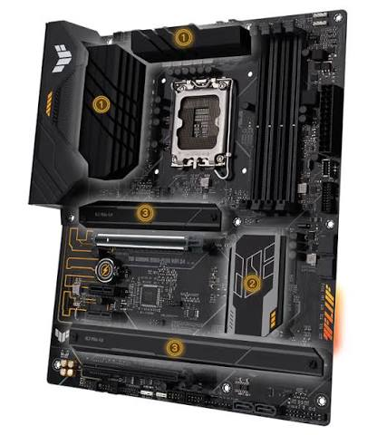
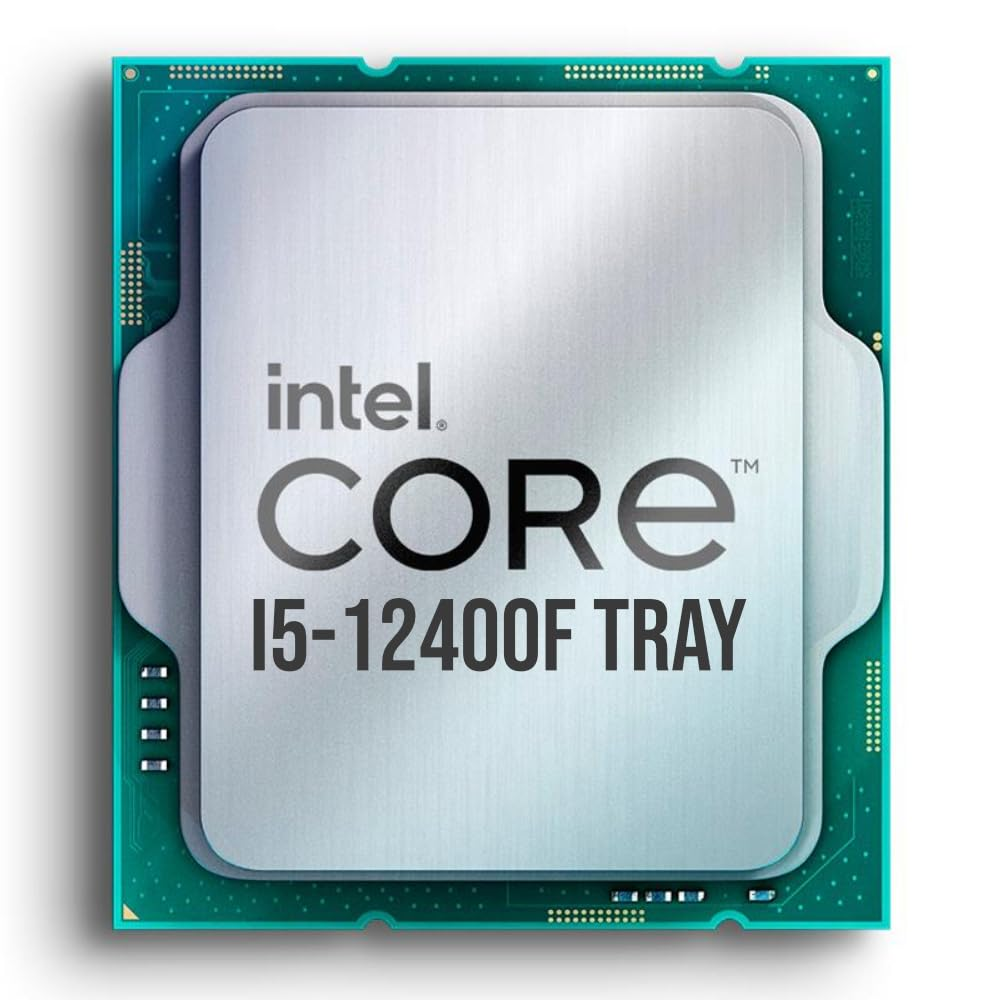
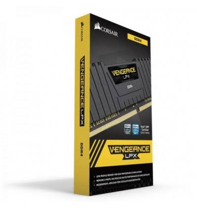
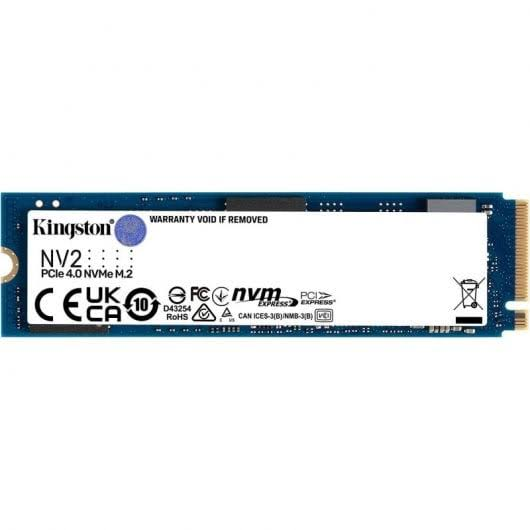
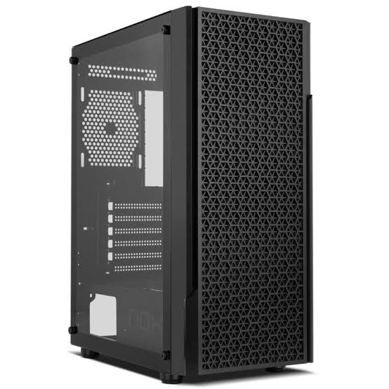
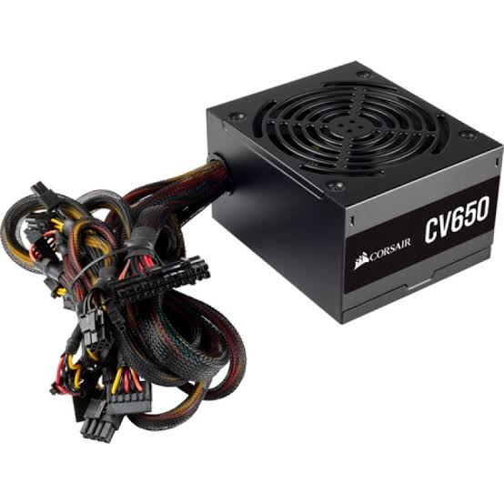
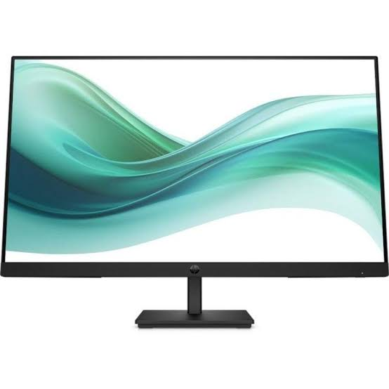

Placa base
La placa base es uno de los principales componentes de un ordenador. A ella se conectan todo el resto de componentes, dispositivos y periféricos, por lo que hay que escogerla con mucho cuidado, ya que el resto de componentes deberán ser compatibles con la placa. Las características de la placa escogida son las siguientes:

Características
- Marca y socket de procesador compatible: Intel LGA 1700
- Memoria compatible: 4xDDR4 (máximo 128GB)
- Almacenamiento: M.2 y SATA
- Formato: ATX
- Dispone de módulo Wi-Fi
Precio
168€ en PCComponentes
Procesador
El procesador es el cerebro del ordenador. Hay que elegir uno con el mismo socket que la placa base. Las características del procesador escogido son las siguientes:

Características
- Modelo: Intel Core i5-12400F
- Núcleos e hilos: 6 núcleos y 12 hilos
- Frecuencia: 2,5 GHz base y 4,4 GHz en turbo
- Socket: LGA 1700
- Caché: 18 MB L3 y 7,5 MB L2
- TDP: 65 W
- Incluye refrigerador en la caja
Precio
151€ en PCComponentes
Memoria
La memoria RAM guarda los datos de los programas que se están ejecutando. Debe ser del mismo tipo que admite la placa base. Las características de la memoria escogida son las siguientes:

Características
- Modelo: Corsair Vengeance LPX
- Capacidad: 16 GB (kit de 2 módulos de 8 GB)
- Tipo: DDR4 DIMM de 288 pines
- Frecuencia: 3200 MHz (PC4-25600)
- Latencia: CL16
- Voltaje: 1,35 V
Precio
103,99€ en PCComponentes
Almacenamiento
El almacenamiento guarda de forma permanente el sistema operativo, los programas y los archivos. Las características del disco escogido son las siguientes:

Características
- Modelo: Kingston NV2 (SNV2S/1000G)
- Capacidad: 1 TB
- Formato: M.2 2280
- Interfaz: PCIe 4.0 x4 NVMe
- Velocidad de lectura secuencial: hasta 3500 MB/s
Precio
70,99€ en PCComponentes
Torre
La torre es la caja donde se montan todos los componentes. Debe admitir el formato de la placa base. Las características de la torre escogida son las siguientes:

Características
- Modelo: NOX Infinity Beta
- Formato: semitorre
- Placas compatibles: ATX, Micro-ATX e ITX
- Panel lateral de cristal templado
- Puertos frontales: 1 USB 3.0, 2 USB 2.0, audio HD y micrófono
- Ventiladores: no incluidos, admite hasta 8 de 120 mm
- Dimensiones: 384 x 216 x 487 mm
Precio
32,17€ en PCComponentes
Fuente de alimentación
La fuente de alimentación da energía a todos los componentes del ordenador. Las características de la fuente escogida son las siguientes:

Características
- Modelo: Corsair CV Series CV650
- Potencia: 650 W
- Certificación: 80 Plus Bronze
- No modular (cables fijos)
- Ventilador de 120 mm
- Conectores: ATX 20+4, CPU 4+4, 2 PCIe 6+2 y 7 SATA
Precio
59,99€ en PCComponentes
Monitor
El monitor es el periférico que nos muestra la imagen del ordenador. Las características del monitor escogido son las siguientes:

Características
- Modelo: HP Series 3 Pro 327pf
- Tamaño: 27 pulgadas
- Resolución: Full HD (1920 x 1080)
- Panel: IPS
- Frecuencia de refresco: 100 Hz
- Flicker Free y compatible con VESA
Precio
171,61€ en PCComponentes